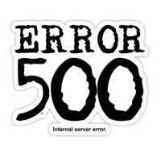
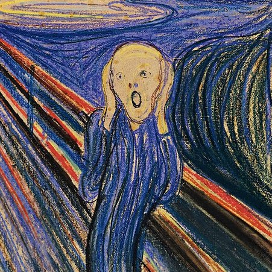

<%= article.title %>
<%= article.date %>
by <%= article.author %>

The sky was turning dark when I saw the first _Internal Server Error_ (code 500). It was 5PM in the winter's afternoon and we were close to the release deadline. My heart missed at least two beats while my mouse ran to the reload button: "It may be just a network error, I thought". But it wasn't.
That day I was working on an important server side piece of code but now nothing was working anymore. No error messages, no logs. Nothing but a _code 505_. I went into panic.
Around me everyone was packing up to go home and I thought I could not bother them with an error I made on my own code. I was ashamed: "What they'll think of me? I will loose my credibility as good developer for sure". That was my fear and the room seemed to close down all around me. I was choking!
It was the _Curse of the Proud Developer_ kicking in after a long day of coding.
So I started to debug my code from scratch. After going through generic checkpoints, I changed my strategy. I moved to a simple but effective line by line comment and test mode. A damn long and frustrating process. The code went blurry before my eyes.

I remember I was almost sweating under the office lights, my sight narrowed down on my keyboard. I was trying to ignore all the happy people around me, hoping for a miracle to happen. And then the miracle did happen.
"We are going to Paddy's, will you join us?" It was Johan asking me out to the local pub where we hang out with the team every Friday night. "Ehm, I'm kinda stuck with a damn bug, can't join right now", my voice was trembling so much I felt ashamed.
Johan came to my desk and we got into in a pair programming session to fix the bug. In a few minutes Vladimir and Maximilian also joined us as well. It was the whole team working together to solve a late _WTF_ before going to the pub to celebrate the past week!
In the end we found the problem and today nobody recall who was to thank for the bug fix, it was a real team work, and it was successful. We really deserved that beer!
Since that _Black Friday_ I faced many other _WTF_ moments but I've never wasted another minute trying to get out of it on my own. What a relief, I neither panic, nor choke anymore.
My team is here to help me as I'm here to help them and this is how we overcame the _Curse of the Proud Developer_!
### Remember your Takeaway:
1. seek for help among your mates
2. a team play wins over the lonely wolf